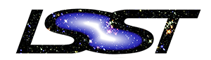

Python in Astronomy 2016
21-25 March 2016
University of Washington, Seattle
About
The second Python in Astronomy conference will be held from 21-25 March 2016 at the University of Washington eScience Institute in Seattle, WA, USA.
Similarly to the 2015 meeting (which was held at the Lorentz Center), we are aiming to bring together researchers, Python developers, users, and educators. The conference will include presentations, tutorials, unconference sessions, and coding sprints. In addition to sharing information about state-of-the art Python Astronomy packages, the workshop will focus on improving interoperability between astronomical Python packages, providing training for new open-source contributors, and developing educational materials for Python in Astronomy. The meeting is therefore not only aimed at current developers, but also users and educators who are interested in being involved in these efforts.
Proceedings
There are several resources that you can use to find out more about the conference:
- The 'Unproceedings' document: a document describing the discussions and progress made during unconference sessions. This is published on Zenodo and can be cited using the DOI https://doi.org/10.5281/zenodo.56793.
- The YouTube Python in Astronomy 2016 playist: videos for most talks from the conference.
- The Talk slides : these are also archived on Zenodo in the Python in Astronomy Conference Series collection.
- Twitter archive for the workshop hashtag: #pyastro16
Details
The conference program can be found here and the list of participants can be found here.
During the workshop, we required participants to follow the code of conduct for the workshop which can be found here. If you have any questions about the workshop, you can reach the SOC at python.in.astronomy.soc@gmail.com
The workshop was hosted by the University of Washington eScience Institute, whose mission is to engage researchers across disciplines in developing and applying advanced computational methods and tools to real world problems in data-intensive discovery.
The hashtag for this meeting is #pyastro16
This workshop is kindly sponsored by:


The organizing committee: Thomas Robitaille (chair), Kelle Cruz, Perry Greenfield, Eric Jeschke, Mario Juric, Stuart Mumford, Chanda Prescod-Weinstein, Megan Sosey, Erik Tollerud, and Jake Vanderplas